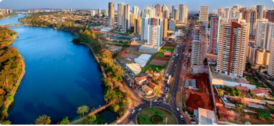
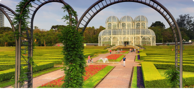
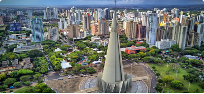

Home
Cidades
Listas

Destino
Londrina, PR
Londrina é um município brasileiro localizado no estado do Paraná, na Região Sul do Brasil, distando 381 km da
capital paranaense, Curitiba. É considerada pela CGU a cidade mais transparente do Paraná.
Visualizar cidade

Destino
Curitiba, PR
Curitiba é a capital do estado do Paraná, na região sul do Brasil. A Torre Panorâmica, que tem um observatório em
sua parte superior, destaca-se na silhueta da cidade.
Visualizar cidade

Destino
Maringá, PR
Maringá é um município brasileiro do estado do Paraná, sendo uma cidade média-grande planejada e de urbanização
recente.
Visualizar cidade